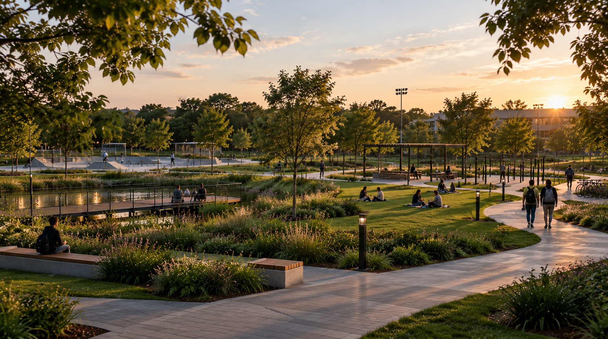
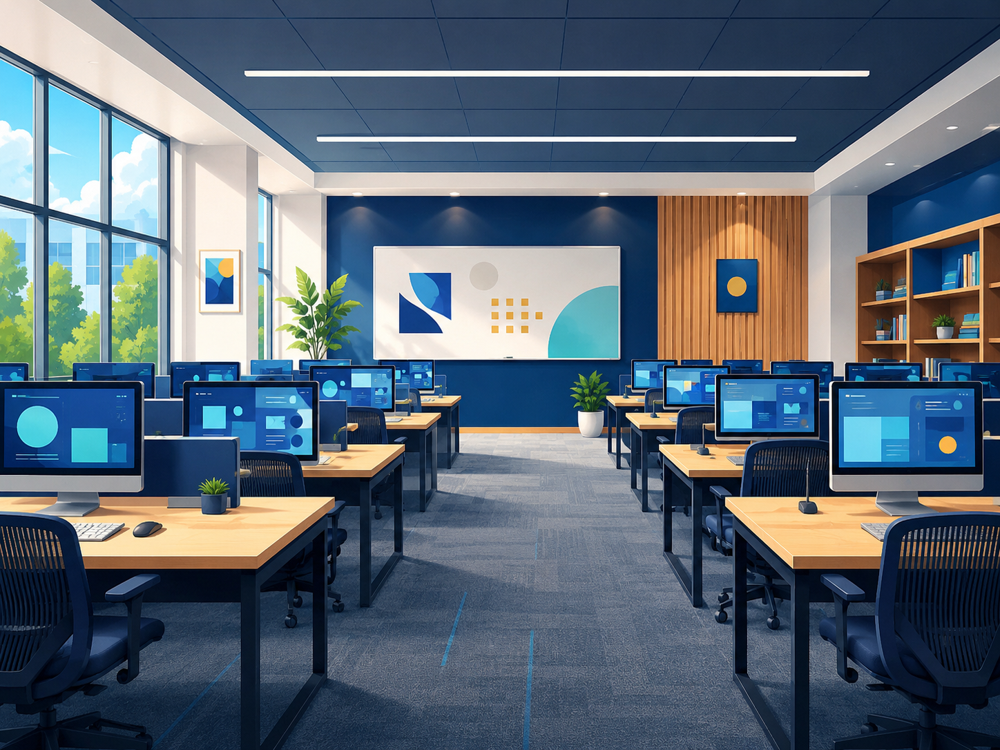
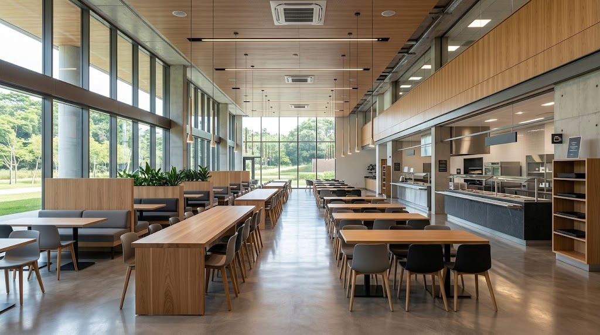

Biblioteca
Categoria: Estudo
Localização: no térreo do prédio principal, ao lado da recepção e em frente à entrada do campus.
Informação útil: possui salas de estudo em grupo e computadores para pesquisa. Mantenha o silêncio nas áreas de leitura.

Conheça os principais espaços do campus, com a categoria, a localização e uma informação útil sobre cada um.
Categoria: Estudo
Localização: no térreo do prédio principal, ao lado da recepção e em frente à entrada do campus.
Informação útil: possui salas de estudo em grupo e computadores para pesquisa. Mantenha o silêncio nas áreas de leitura.
Categoria: Convivência
Localização: atrás do prédio principal, no caminho entre a biblioteca e a quadra esportiva.
Informação útil: espaço aberto com bancos e sombra, ideal para descansar nos intervalos e estudar ao ar livre.

Categoria: Aulas práticas
Localização: todos os andares do prédio principal possuem laboratórios, sempre ao lado das escadas e dos elevadores.
Informação útil: o acesso é feito com o crachá do aluno, durante as aulas ou com agendamento prévio.

Categoria: Alimentação
Localização: no prédio ao lado da quadra esportiva, a poucos passos da área verde.
Informação útil: oferece lanches e refeições completas, com opções vegetarianas, nos três períodos de aula.

Categoria: Esporte e lazer
Localização: ao lado do refeitório, após a área verde, com acesso pelo corredor lateral do prédio principal.
Informação útil: disponível para aulas de educação física e jogos entre turmas. Use calçado esportivo.

Categoria: Eventos
Localização: no último andar do prédio principal, no fim do corredor dos laboratórios, perto da escada de emergência.
Informação útil: recebe palestras, apresentações e formaturas. Possui lugares reservados para cadeirantes.